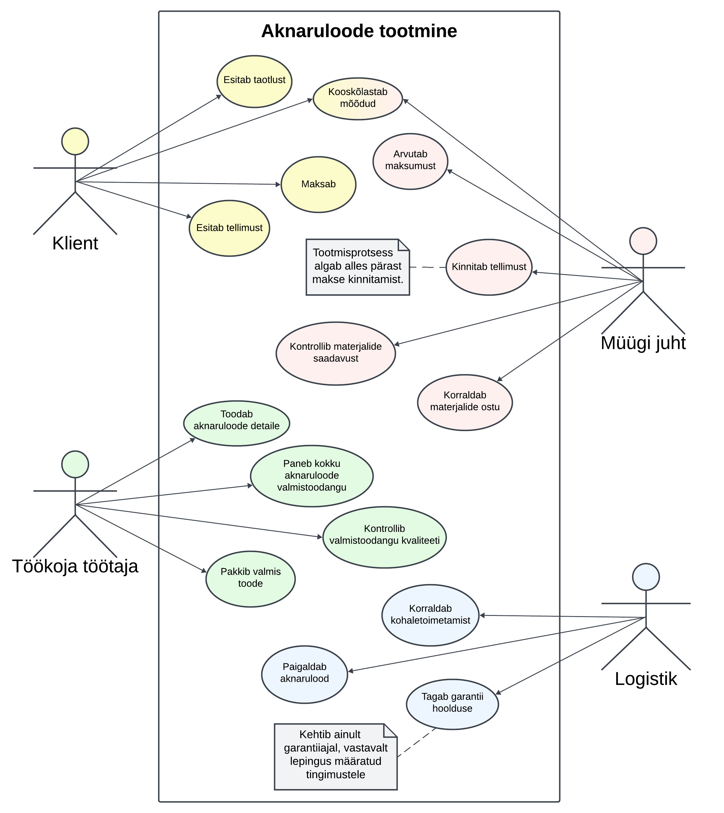
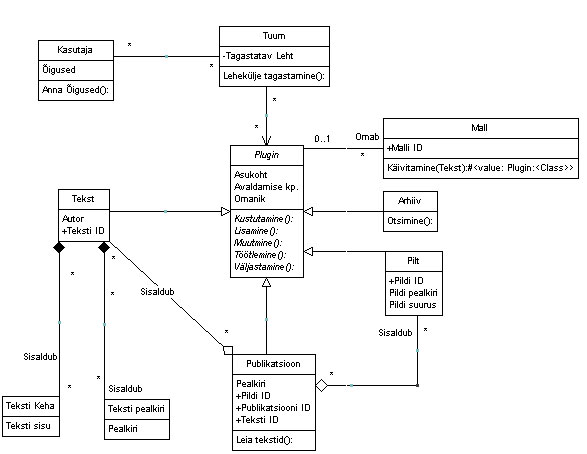

UML diagrammikeel
Mis on UML?
UML on visuaalne modelleerimiskeel, mida kasutatakse tarkvarasüsteemide arendamisel uue arendustöö kirjeldamiseks
kui ka dokumenteerimiseks.. See aitab arendajatele (ja teistele isikutele) kirjeldada, visualiseerida, konstrueerida ja
dokumentaliseerida süsteemide arhitektuuri, disaini ja toimimist. Erinevaid diagrammiliike on kasutusel väga palju, mille
abil saab kuvada sõltuvalt arendatava projekti eesmärgist või etapist- näiteks tarkvaratoote käitumise kirjeldamiseks on
käitumisdiagramm, andmestruktuuri kirjeldamiseks ERD ehk olemidiagramm diagramm jne.
Diagramme kasutatakse nii uue arendustöö kirjeldamiseks kui ka olemasoleva dokumenteerimiseks.
Kuidas UML tekkis?
UML tekkis vajadusest kujutada objektorienteeritud programmeerimise jaoks ühtset keelt, mis kuvaks protsessi ilma koodita.
Algselt tekkis see kui Grady Booch ja James Rumbaugh ühendasid oma diagrammikeeled, kuhu siis aja jooksul lisandusid teised
harud. UML on ise akronüüm ingliskeelsest terminist "Unified Modeling Language".
Mida saab kujutada UMLiga ehk kui palju erinevaid diagrammide liike olemas on?
Erinevaid UML liike on palju. Näiteks:
- vooskeem (flow chart)
- klassidiagramm (class diagram)
- objektidiagramm (object diagram)
- koostöö diagramm (collaboration diagram)
- olemidiagramm (entity relation diagram)
- kasutuslooskeem (use case diagram)
- olekuskeem (state diagram)
- tegevusdiagramm (activity diagram)
- komponendidiagramm (component diagram)
- kommunikatsioonidiagramm (communication diagram)
- ajastusskeem (timing diagram)
- jadaskeem (sequence diagram)
- levitusskeem (deployment diagram)
- paketiskeem (package diagram)
- profiilidiagramm (profile diagram)
Mõningaid UML liike
Kasutuslooskeem ehk Use Case Diagram
Üks peamisi tööriistu süsteemi analüüsis ja disainis. Diagramm näitab süsteemi ja kasutajate vahelisi suhteid,
st näitavad, kuidas kasutajad suhtlevad süsteemi osadega ning milliseid teenuseid see pakub.
- Aktorit kujutatakse sageli inimesena, et tähtsustada tema rolli protsessis.
- Kasutusjuhtumeid näidatakse ovaalidena ja need tähistavad tegevusi või teenuseid.
- Ühendused kasutusjuhtumite ja aktorite vahel näidatakse joonte või noolte abil. Noole suund määrab,
kes teenust küsib või pakub.

Allikas (Maria Smolina)
Klassidiagramm ehk Class Diagram
Klassidiagrammid näitavad täpselt süsteemi struktuuri, modelleerides selle klasse, omadusi, toiminguid ja seoseid objektide
vahel.
Neid kasutatakse objektorienteeritud süsteemide kavandamiseks ja mõistmiseks, st see on staatiline struktuuridiagramm, mis
esitab süsteemi klasse, nende omadusi ja operatsioone ning klassidevahelisi seoseid, kirjeldades seeläbi süsteemi ülesehitust.
- Nimed on esimene rida, mida näete klassidiagrammil.
- Atribuudid on teine rida, kus kujutatakse atribuute.
- Meetodid on kolmas rida, kus kujutatakse operatsioone.
- Signaal on asünkroonne side objektide vahel.
- Andmetüübid määravad andmete väärtused.
- Liidesed on käitumiste kogum, mis on määratletud operatsioonide allkirjade ja atribuutide definitsioonide
kogumiga. Klassid ja liidesed on sarnased, kuid liides nõuab selle rakendamiseks vähemalt ühte klassi.
- Loendused koosnevad identifikaatorite rühmitusest, mis tähistavad loendi väärtusi.
- Objektid esindavad prototüüpseid või konkreetseid juhtumeid.
- Interaktsioonid viitavad erinevatele seostele ja suhetele, mida võib näha klassi- ja objektidiagrammis.

Allikas
Jadaskeem ehk Sequence Diagram
Olekuskeem ehk State Diagram
vali ise